The spectrum of electromagnetic waves has frequencies up to 1024 Hz. This very large range is subdivided into different subranges because of different physical properties. The subdivision of the frequencies into the different ranges was previously measured according to criteria that were historically developed and are now obsolete, so a new classification of the frequency bands was created. This new classification could not yet be fully established internationally. The traditional frequency band designation is often still used in the literature. In NATO the new subdivision is used.
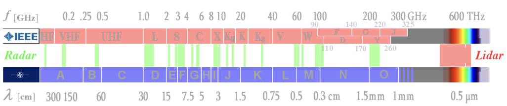
There are currently two valid designation systems for frequency bands. The IEEE favors the designation system that originated historically, and whose intentionally unsystematic distribution of the letters to the band designation partly originates from the time of World War II. Its selection was initially intended to keep the frequencies used secret.
A newer frequency band classification is used within NATO. Its band boundaries are adapted to the technologies and measurement possibilities in the different frequency ranges. They are almost logarithmically distributed and the system is open to the high frequencies. In this system, further frequency bands up to the terahertz range can easily be defined in the future. This designation system is also of military origin and is a band division for electronic war, in which radar equipment finally occupies an essential place.
Since an assignment into the new frequency bands is not always possible without the exact frequency being known, the traditional band names are used without comment where they were mentioned in the manufacturer's publications. But be careful. In Germany, for example, companies still use old band names. Radar sets of a so-called "C-band family" operate with certainty in the new G-band, but radar sets with the letter L in the designator (e.g., SMART-L) no longer operate in the L-band but in the D-band.
The frequencies of radar sets today range from about 5 megahertz to about 130 gigahertz (130,000,000,000 oscillations per second). However, certain frequencies are also preferred for certain radar applications. Very long-range radar systems usually operate at lower frequencies below and including the D-band. Air traffic control radar at an airport operate below 3 GHz (ASR) or below 10 GHz (PAR).
These radar bands below 300 MHz have a long tradition, as the first radar sets were developed here before and during World War II. The frequency range corresponded to the high-frequency technologies mastered at that time. Later, they were used for early warning radar of extremely long range, so-called over-the-horizon radar (OTH).
Normally radar systems have a problem: the bend of the earth's surface. The maximum range of these radar is limited by the radio horizon, slightly farther away than the optical horizon. OTH radar use very long wavelengths with special properties of propagation. Given the long wavelengths, an OTH antenna array is a quickly spreading array, stretched out over many miles. Some OTH radar use FMCW to maximize signal energy, and such systems require separate transmit and receive antenna arrays.
Several OTH radar systems were deployed starting in the 1950s and 1960s as part of early warning radar systems, but these have generally been replaced by airborne early warning systems. OTH radar have recently been making something of a comeback, as the need for accurate long-range tracking becomes less important with the ending of the Cold War, and less-expensive ground-based radar are once again being looked at for roles such as maritime reconnaissance and drug enforcement.
OTH-SW radar use a very low transmission frequency from 2 MHz to 20 MHz. These electromagnetic waves tend to bend or "diffract" around edges or curves. They are coupled to the conductive ocean surface forming a "ground wave." They can bend over the horizon and will follow the curvature of the earth. In the figure below, compare the red antenna pattern of a radar using a direct wave in the gigahertz region with a green antenna pattern of an OTH-SW radar.
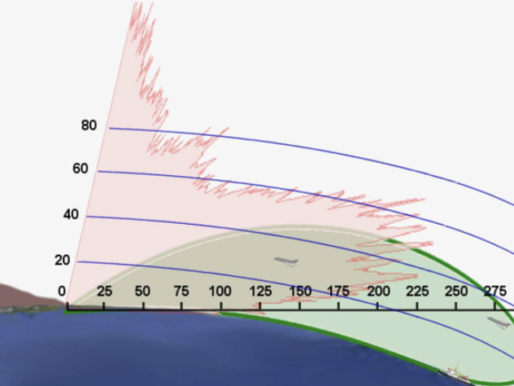
Raytheon Canada and the Canadian military developed the HF-SWR-503, which is this type of radar. This oceanic surveillance system is used to monitor illegal activities (drug trafficking, smuggling, piracy, illicit fishing, illegal immigration, and others). In addition, it may be used for tracking icebergs, environmental protection, resource protection, sovereignty monitoring, and remote sensing of ocean surface currents and winds. It is also useful in search and rescue operations.
It consisted of an array of monopoles 660 meters (2,165 feet) long, with the monopoles spaced at about 50 meters (164 feet), corresponding to half the wavelength of the radar's 3 MHz operating band. The array has a field of view of 120 degrees and can track targets to the limit of Canada's 370 kilometer (200 nautical miles) oceanic economic exclusion zone. It can obtain positions accurate to within hundreds of meters. Raytheon stated that a similar array could be used to track low-flying cruise missiles if it operated at a frequency of 15 to 20 MHz.
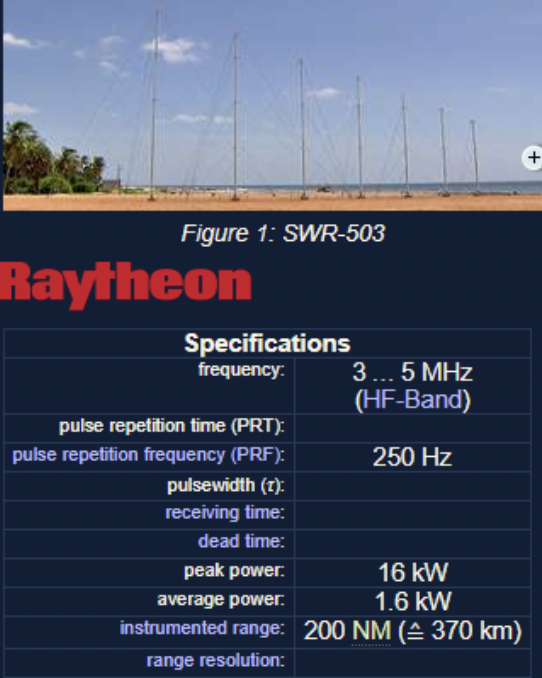
A German OTH-SW application with more civil use is the WERA. The WERA system is a shore-based remote sensing system to monitor ocean surface currents, waves, and wind direction. It uses the principle of FMCW with a very slow sweep period of typically 0.3 seconds. This oceanography radar can pick up backscattered signals (Bragg effect) from ranges of up to 200 km.
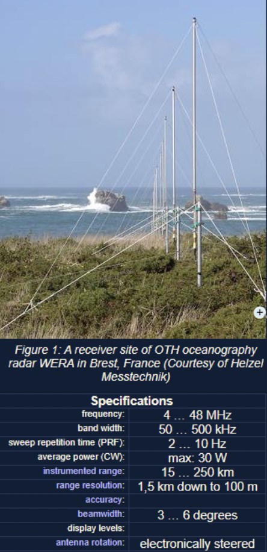
It is also possible to build radar that has "over-the-horizon" range, obtained by "bouncing" or "backscattering" radio waves off the ionosphere, the ionized layer at the top of the atmosphere. It uses slightly higher frequencies (up to 50 MHz). The scheme has many similarities to OTH-SW, requiring large antenna arrays. Even at RF frequencies, OTH-B is problematic. The exact properties of the ionosphere can vary over the course of a day. Even when the ionosphere is stable, it does not crisply reflect radio waves back down toward the ground. It is more likely that those back signals will be smeared out into scatter pulses. Of course, along with a range of thousands of kilometers comes extremely weak returns. OTH-B requires a good deal of sophisticated radar signal processing.
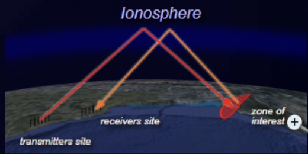
Since the accuracy of angle determination and the angular resolution depends on the ratio of wavelength to antenna size, these radar cannot meet high accuracy requirements. The antennas of these radar sets are nevertheless extremely large and can even be several kilometers long. Here special abnormal propagation conditions act, which increase the range of the radar again at the expense of accuracy. Since these frequency bands are densely occupied by communication radio services, the bandwidth of these radar sets is relatively small.
These frequency bands are currently experiencing a comeback, while the stealth technologies actually in use do not have the desired effect at extremely low frequencies.
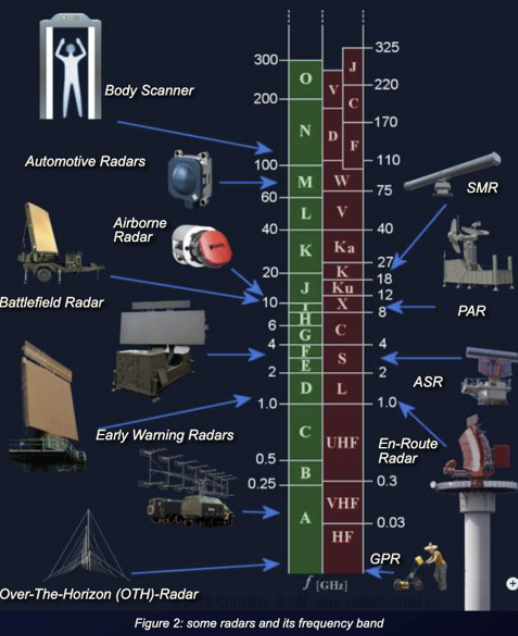
For this frequency band (300 MHz to 1 GHz), specialized radar sets have been developed, which are used as military early warning radar, for example for the medium extended air defense system (MEADS), or as wind profilers in weather observation. These frequencies are damped only very slightly by weather phenomena and thus allow a long range. Newer methods, so-called ultrawideband radar, transmit with very low pulse power from the A- to the C-band and are mostly used for technical material investigation or partly in archaeology as ground penetrating radar (GPR).
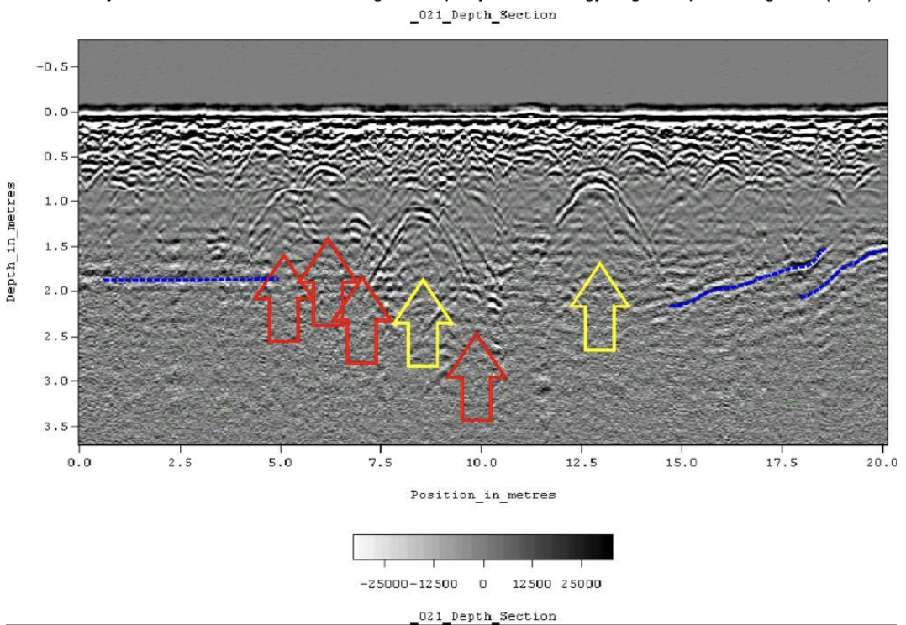
This range is ideally suited for modern long-range air surveillance radar up to a range of 250 nautical miles (about 400 km). Relatively low interference from civil radio communication services enables broadband radiation with very high power. These radar transmit pulses with high power, wide bandwidth, and intrapulse modulation to achieve even longer ranges. Due to the curvature of the earth, however, the range that can be practically achieved with these radar sets is much smaller at low altitudes, since these targets are then obscured by the radar horizon.
In this frequency band the en-route radar or air route surveillance radar (ARSR) work for air traffic control. In conjunction with a monopulse secondary surveillance radar (MSSR), these radar operate with a relatively large, slowly rotating antenna. (L-band: like large antenna and long range.) The designator L-band is as good a mnemonic rhyme as a large antenna.
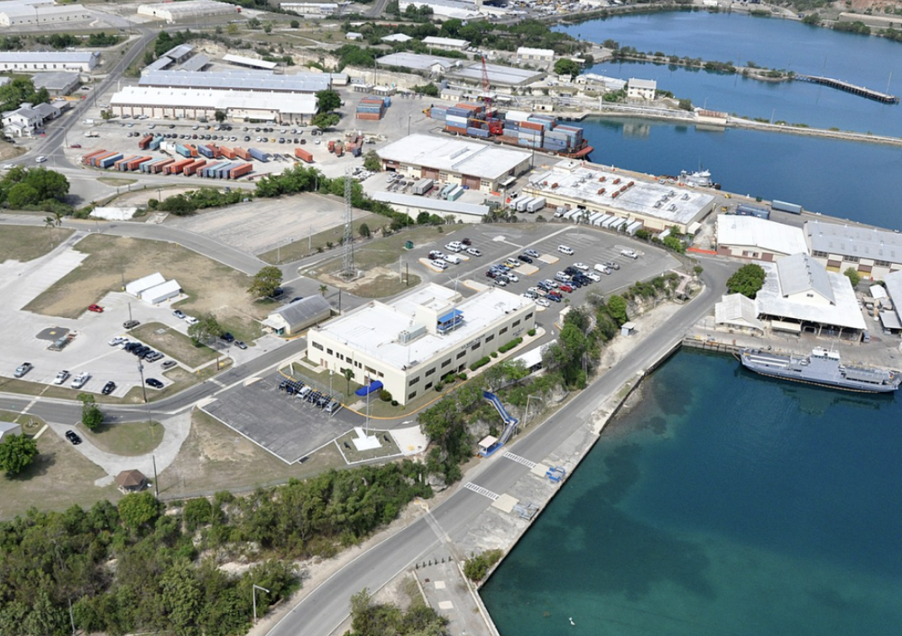
In the frequency band from 2 to 4 GHz the atmospheric attenuation is higher than in the D-band. Radar sets require a much higher pulse power to achieve long ranges. An example is the older military medium power radar (MPR) with up to 20 MW pulse power. In this frequency band, considerable impairments due to weather phenomena are already beginning to occur. Therefore a couple of weather radar work in E/F-band but more in subtropic and tropic climatic conditions, because here the radar can see beyond a severe storm.
Special airport surveillance radar (ASR) are used at airports to detect and display the position of aircraft in the terminal area with a medium range up to 50 to 60 NM (about 100 km). An ASR detects aircraft position and weather conditions in the vicinity of civilian and military airfields. The designator S-band is good for a mnemonic rhyme with smaller antenna or requiring shorter range (contrary to L-band).
For this frequency band, mobile military battlefield radar with short and medium range are used. The antennas are small enough to be quickly installed with high precision for weapon control. The influence of weather phenomena is very large, which is why military radar sets are usually equipped with antennas with circular polarization. In this frequency range, most weather radar are also used for moderate climates.
Between 8 and 12 GHz, the ratio of wavelength to antenna size has a more favorable value. With relatively small antennas, sufficient angular accuracy can be achieved, which favors military use as airborne radar. On the other hand, the antennas of missile control radar systems, which are very large relative to the wavelength, are still handy enough to be considered deployable.
This frequency band is mainly used in civil and military applications for maritime navigation radar systems. Small, cheap, and fast-rotating antennas offer sufficient ranges with very good precision. The antennas can be constructed as simple slot radiators or patch antennas.
This frequency band is also popular for space-borne or airborne imaging radar based on synthetic aperture radar (SAR), both for military electronic intelligence and civil geographic mapping. A special application of the inverse synthetic aperture radar (ISAR) is the monitoring of the oceans to prevent environmental pollution.
SAR uses the motion of the radar antenna over a target region to provide finer spatial resolution than conventional stationary beam-scanning radar.
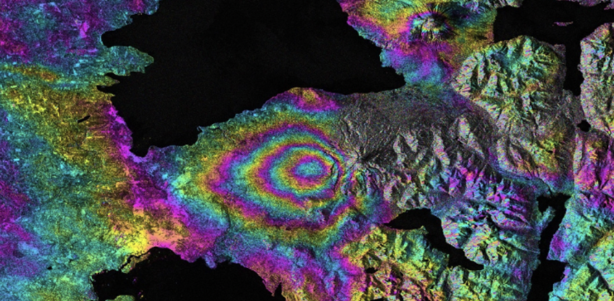
As the emitted frequency increases, the attenuation in the atmosphere increases but the possible accuracy and range resolution increase too. Large ranges can no longer be achieved. Radar applications in this frequency range are, for example, airfield surveillance radar, also known as surface movement radar (SMR) or (as part of) airport surface detection equipment (ASDE). With extremely short pulses of a few nanoseconds, an excellent range resolution is achieved so that the contours of aircraft and vehicles can be seen on the display.
Due to molecular scattering of the atmosphere the electromagnetic waves suffer a very strong attenuation. Radar applications are limited to a range of a few tens of meters.
Two phenomena of atmospheric attenuation can be observed here. A maximum of attenuation at about 75 GHz and a relative minimum at about 96 GHz. Both frequencies are used practically. At about 75 to 76 GHz, short-range radar sets are used in automotive engineering as parking aids, brake assist systems, and automatic accident avoidance. This high attenuation through molecular scattering (here through the oxygen molecule O2) prevents mutual interference through mass use of these radar sets.
There are currently some radar sets operating in the 96 to 98 GHz range, but mainly as laboratory experiments. These applications perhaps preview future radar systems in extremely higher frequencies (greater than 100 GHz).
In the 122 GHz range there is another ISM band for measurement applications. Since in high-frequency technology the terahertz range is defined from 100 GHz (0.1 THz) to 300 GHz, the industry offers radar modules for this frequency range as "terahertz radar." These terahertz radar modules are used in full-body scanners. Full-body scanners take advantage of the fact that, although these terahertz frequencies can easily penetrate dry and nonconductive substances, they cannot penetrate the skin deeper than just a few millimeters due to the moisture of the human skin.
Radar coverage describes the areas controlled by radar or a radar network in airspace.
In a two-dimensional radar system, the area is typically represented by an antenna with a cosecant square pattern. In its main beam direction you will see a vertical rectangle with rounded corners, which rotates about a vertical axis. This creates on the radar site a room with the geometry of a flat cylinder within which the radar can locate an aerial target. In a typical air surveillance radar (ASR) (or terminal area radar), this cylinder has a diameter of about 120 NM (220 km) and a height of about 10,000 feet (or 3,000 m).
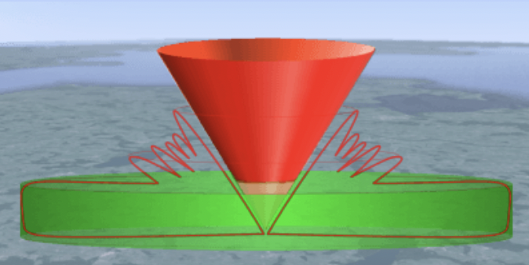
Radar is not designed to detect aircraft directly above the radar antenna. This gap is known as the cone of silence. This gap or cone of silence is the inverted cone mapped out by the rotating antenna as a result of the antenna back angle being less than 90 degrees. Hence, the back angle is an important antenna parameter. If the back angle is shallow then aircraft will fall outside radar cover as they fly over the radar site. For most radar, the actual radius of the cone of silence is twice the height of the target. This means a target at a height of 10,000 feet (or 3,000 m) enters the cone of silence at a range of 3.25 NM (6,000 m). Aircraft flying in the radar's cone of silence may, however, be detected by additional radar in the system due to their overlapping coverage.
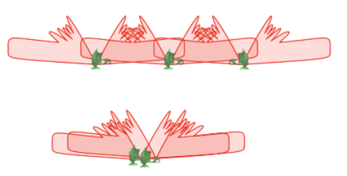
This term is applied accordingly in side-looking airborne radar. Here, however, the cone of silence is an area in the advance flight direction, or in the opposite direction.
A flat cylinder has a relatively smooth lower surface in flat terrain. A curvature of the outer edges upward is on the order of half a degree. The low-altitude coverage is limited by the shadow formed by the earth's curvature. Uneven terrain such as hills or mountains and valleys also has an impact on the size of the dead zone through shading. This dead zone can also be covered by another radar. Despite a large number of organized radar networks, there typically is a space at extremely low altitude at which an aircraft can fly below the radar. In practice, this is difficult for the pilot. The pilot must know exactly where to fly to remain as far away from each radar as possible. In order to keep this lower limit as low as possible, a very dense network of radar is typically deployed in defense applications. As you can imagine, countries in mountainous regions (e.g., Switzerland and Austria) have problems establishing a complete area with full radar coverage. For the requirements of national defense, a number of smaller mobile radar sets (so-called gap-fillers) are established exactly in the gaps where they are needed.
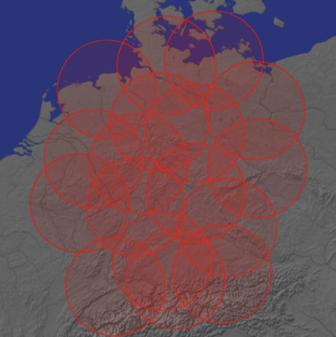
Depending on the task, such overlap is done according to different principles. For air surveillance on behalf of national defense, complete radar coverage must be organized down to a height of approximately 100 m. However, overlap with the cones of silence is not necessary.
In air traffic control, the cone of silence has much higher importance. In contrast, flight movements in a flight level lower than 300 feet (100 m) are completely irrelevant far away from any airport, for example from a distance of 30 NM (55 km). For very large airfields, such as the Munich airport, two terminal area radar are used for reasons of redundancy. One ASR is located north, and one ASR is located south of the airfield at a mutual distance of just 8 km away. So they cover their cone of silence for each other.
The Deutscher Wetterdienst (German Weather Service) can cover Germany with 17 radar, each with a range of 150 km. The radar used (e.g., type Meteor 1500C) are able to pivot their parabolic antennas vertically upward. Therefore they do not have a cone of silence compared to a 2D radar. A radar low-altitude coverage of fewer than 200 m is also not important for weather radar.
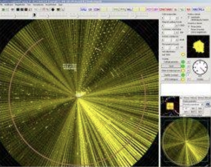
Electronic warfare (EW) is one of the key elements of the modern battle scenario, protecting one's own forces from attack, denying information to the enemy, and intercepting and disrupting the enemy's own voice communication and data links. In effect, EW is an ongoing war between active systems that "attack" and defensive systems that protect. A widespread network of electronic intelligence stations is operated by many countries by land, sea, and air, not only to monitor the electromagnetic spectrum but also to disrupt hostile transmissions by jamming in a number of ways.
Development of radar systems with complex EW applications requires test and measurement equipment capable of agile signal generation. A vector signal generator offers test engineers the ability to generate signals that hop from various frequencies accurately. Multichannel signal generators increase the ability to generate complex waveforms with multiple signals that are synchronized in phase and frequency. A perfect vector signal generator would have ultra-fast frequency hopping while preserving coherence between signals. Today's R&D efforts by test and measurement manufacturers are focused on cleaner hopping and phase and frequency coherence, while increasing the IQ bandwidth.
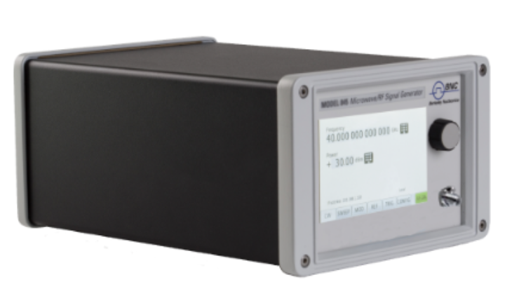
For additional illustration, see sample video of IQ modulation or multichannel sweep and chirps at www.berkeleynucleonics.com.
Check your understanding. A short interactive quiz covers the frequency bands, over-the-horizon radar, and radar coverage from this chapter.